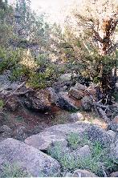
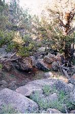

by Adam Mehlberg
Land Use Chairman
Colorado Association of 4WD Clubs
Royal Gorge district of the BLM has released their decision on the Penrose OHV area extreme 4WD road development project proposed by one of the clubs of the Colorado Association of 4WD Clubs. The preferred alternative has been modified from 0.4 miles of 4WD road development to 1.3 miles. This increase is due to the letters of support sent in to date for this type of project.
The decision by the Colorado RockHoppers 4WD Club is to accept the 1.3 miles of extreme 4WD road development in the Penrose area. They will begin working on this with the Royal Gorge BLM as soon as the comment period is over (Nov. 6th). A reduced amount of volunteer activity on the surrounding area will be their response to the reduced mileage in the final decision. If more mileage is developed after the initial 12 months of monitoring, work on the access road to the Penrose area and other volunteer projects will be entertained.
We will need to support this decision in order to offset the inevitable complaints from the local, and possibly national environmental groups and activists. The decision allows for a request of further review prior to November 6th, 1998. If a person or group is opposed to this decision they can request this further review, but must state the reasons why. Further review will delay implementation, and could change the decision.
Send your comments, before November 6th, in support of the decision to:
Donnie Sparks, District Manager Royal Gorge Resource Area 3170 East Main Street Canon City, CO 81212Reference the Decision Record for the EA titled "Penrose Off-Highway Vehicle Trails Authorization" (CO-057-98-126EA).
Thanks for your support of Scott Riebel's, Jerry Panek's, and the Colorado RockHoppers 4WD Club's efforts to develop the Penrose OHV Area.
 

{kind=link}